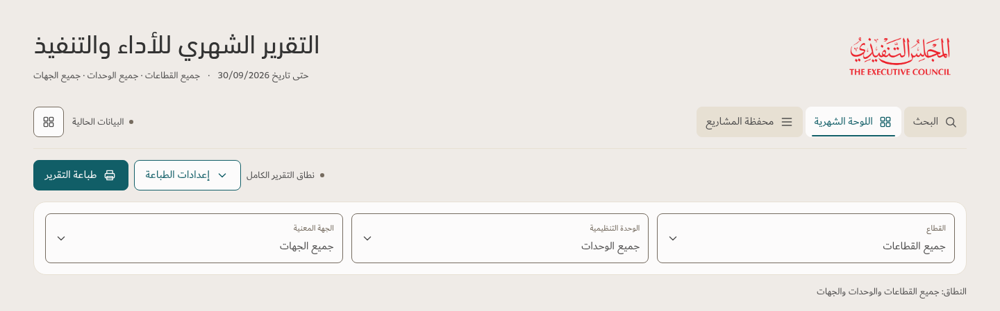
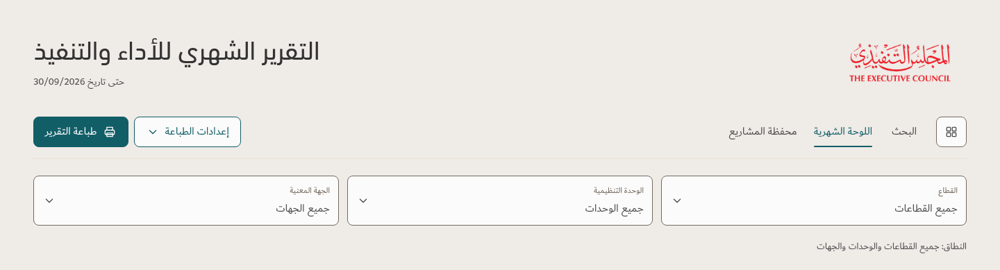

Only the date beneath the title. Quiet text navigation and one compact action row. Core filters remain separate.
Previous proposal → updated concept · same 1440 CSS pixel width, 100% browser zoom · illustrative component preview
Before — Revision 3 proposal / قبل

After — revised concept / بعد
